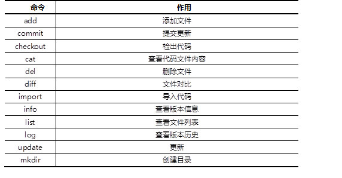
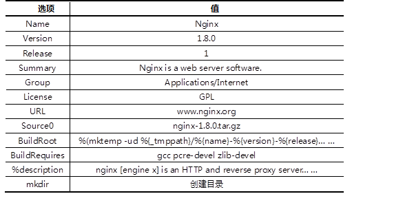

本案例要求先快速搭建好一台Subversion服务器，并测试该版本控制软件：
使用RPM安装subversion软件，使用svn客户端工具连接svnserver服务器并测试版本控制软件。
使用svn命令测试svnserver服务时可以使用的命令列表如表-1所示。
表－1 svn命令列表
实现此案例需要按照如下步骤进行。
步骤一：安装Subversion服务器
1）YUM安装subversion软件
[root@svr5 ~]# yum -y install subversion [root@svr5 ~]# rpm -q subversion
2)创建版本库
[root@svr5 ~]# mkdir /var/svn/ [root@svr5 ~]# svnadmin create /var/svn/project [root@svr5 ~]# ls /var/svn/project/ conf/ db/ format hooks/ locks/ README.txt
3）修改配置文件，创建账户与密码
[root@svr5 ~]# vim /var/svn/project/conf/svnserve.conf
[general]
### These options control access to the repository for unauthenticated
### and authenticated users. Valid values are "write", "read",
### and "none". The sample settings below are the defaults.
anon-access = read //匿名只读
auth-access = write //有效账户可写
### The password-db option controls the location of the password
### database file. Unless you specify a path starting with a /,
### the file's location is relative to the directory containing
### this configuration file.
### If SASL is enabled (see below), this file will NOT be used.
### Uncomment the line below to use the default password file.
# password-db = passwd //密码文件
### The authz-db option controls the location of the authorization
### rules for path-based access control. Unless you specify a path
### starting with a /, the file's location is relative to the the
### directory containing this file. If you don't specify an
### authz-db, no path-based access control is done.
### Uncomment the line below to use the default authorization file.
# authz-db = authz //ACL访问控制列表文件
### This option specifies the authentication realm of the repository.
### If two repositories have the same authentication realm, they should
### have the same password database, and vice versa. The default realm
### is repository's uuid.
# realm = My First Repository
[root@srv5 ~]# vim /var/svn/project/conf/passwd
### This file is an example password file for svnserve.
### Its format is similar to that of svnserve.conf. As shown in the
### example below it contains one section labelled [users].
### The name and password for each user follow, one account per line.
[users]
harry = pass //用户名和密码
tom= pass //用户名和密码
[root@svr5 ~]# cat /var/svn/project/conf/authz
### This file is an example authorization file for svnserve.
### Its format is identical to that of mod_authz_svn authorization
### files.
### As shown below each section defines authorizations for the path and
### (optional) repository specified by the section name.
### The authorizations follow. An authorization line can refer to:
### - a single user,
### - a group of users defined in a special [groups] section,
### - an alias defined in a special [aliases] section,
### - all authenticated users, using the '$authenticated' token,
### - only anonymous users, using the '$anonymous' token,
### - anyone, using the '*' wildcard.
###
### A match can be inverted by prefixing the rule with '~'. Rules can
### grant read ('r') access, read-write ('rw') access, or no access
### ('').
[aliases]
# joe = /C=XZ/ST=Dessert/L=Snake City/O=Snake Oil, Ltd./OU=Research Institute/CN=Joe Average
[groups]
harry_and_tom = harry,tom //定义组账户，组成员为harry和tom
# [/foo/bar]
# harry = rw
# &joe = r
# * =
[/] //定义ACL访问控制
@harry_and_sally = rw //harry_and_sally组成员对项目可读可写
* = r //其他人只读
4）启动服务
[root@svr5 ~]# service svnserve start [root@svr5 ~]# netstat -nutlp |grep svnserve tcp 0 0 0.0.0.0:3690 0.0.0.0:* LISTEN 4043/svnserve
步骤二：客户端测试
1）本地导入初始化数据
[root@srv5 ~]# mkdir /myscripts [root@srv5 ~]# cp /etc/rc.d/init.d/* /myscripts/ //将启动脚本及个人自定义脚本汇总，如果有其他脚本，则一并复制至此 [root@srv5 ~]# svn import /myscripts/ file:///var/svn/project/ -m "Init Data" [root@srv5 ~]# cd /var/tmp [root@srv5 ~]# svn --username harry --password pass \ co svn://127.0.0.1/var/svn/project harry //harry账户检查数据，建立本地副本 ----------------------------------------------------------------------- ATTENTION! Your password for authentication realm: <svn://127.0.0.1:3690> b72f45f0-bbe5-4a0c-ad4a-37f52704f0b1 can only be stored to disk unencrypted! You are advised to configure your system so that Subversion can store passwords encrypted, if possible. See the documentation for details. You can avoid future appearances of this warning by setting the value of the 'store-plaintext-passwords' option to either 'yes' or 'no' in '/root/.subversion/servers'. ----------------------------------------------------------------------- Store password unencrypted (yes/no)? yes //提示是否保存密码 A harry/netfs A harry/kdump A harry/acpid A harry/blk-availability A harry/killall A harry/NetworkManager A harry/quota_nld A harry/udev-post A harry/haldaemon A harry/saslauthd A harry/network vim test.sh [root@srv5 ~]# cd /var/tmp/harry [root@srv5 harry]# ls [root@srv5 harry]# vim test.sh //新建脚本文件 #!/bin/bash case $1 in start) echo start;; stop) echo stop;; *) echo Error esac [root@srv5 harry]# chmod +x test.sh [root@srv5 harry]# svn add test.sh //将文件或目录加入版本控制 [root@srv5 harry]# svn mkdir subdir //创建子目录 [root@srv5 harry]# svn status //检查状态，结果为两个添加append A test.sh A subdir [root@srv5 harry]# svn del cups //删除版本库中的文件 [root@srv5 harry]# svn move test.sh test //脚本重命名 A test D test.sh [root@srv5 harry]# svn commit -m "add a file and subdir,remove cups file" //将本地副本的修改提交版本库 Deleting cups Adding subdir Adding test Transmitting file data . Committed revision 2. [root@srv5 harry]# sed -i '1a##test###' halt //修改本地副本中的代码文件 [root@srv5 harry]# sed -i '2a###test###' killall [root@srv5 harry]# svn diff killall //查看单个文件本地副本与版本库的差异 [root@srv5 harry]# svn diff //查看所有本地副本与版本库的差异 [root@srv5 harry]# svn log svn://127.0.0.1/var/svn/project //查看修改历史 [root@srv5 harry]# svn update //更新本地副本文件，从版本库下载更新数据
使用svn客户端工具连接subversion服务器并测试多人协同工作以及如何手动解决冲突问题，账户名称分别为harry和tom，最后使用svnadmin dump指令对版本库进行备份工作。
实现此案例需要按照如下步骤进行。
步骤一：多人协同工作
1）开启两个终端，每个人下载本地副本
[root@srv5 ~]# rm –rf /var/tmp/* [root@srv5 ~]# cd /var/tmp [root@srv5 ~]# useradd user1 [root@srv5 ~]# useradd user2 [root@srv5 ~]# su – user1 [root@srv5 ~]# su – user2 [user1@srv5 ~]# svn --username harry --password pass co svn://127.0.0.1/project harry [user2@srv5 ~]# svn --username toom --password pass co svn://127.0.0.1/project tom [user1@srv5 ~]# ls harry [user2@srv5 ~]# ls tom
2) harry和tom修改不同的文件
[user1@srv5 ~]# cd harry [user1@srv5 harry]# sed -i "3a###harry\'s modify#####" svnserve [user1@srv5 harry]# svn commit -m "svnserve has modified" [user2@srv5 ~]# cd tom [user2@srv5 tom]# sed -i "3a###tom\'s modify#####" sshd [user2@srv5 tom]# svn commit -m "sshd has modified" [user1@srv5 harry]# svn update [user2@srv5 tom]# svn update
3）harry和tom修改相同文件的不同行
[user1@srv5 ~]# cd harry [user1@srv5 harry]# sed -i "10a###harry\'s modify#####" svnserve [user1@srv5 harry]# svn commit -m "svnserve has modified" [user2@srv5 ~]# cd tom [user2@srv5 tom]# sed -i "20a###tom\'s modify#####" svnserve [user2@srv5 tom]# svn commit -m "svnserve has modified" Sending svnserve Transmitting file data .svn: Commit failed (details follow): svn: File '/svnserve' is out of date [user2@srv5 tom]# svn update //提示失败后，先更新再提交即可 [user2@srv5 tom]# svn commit -m "svnserve has modified" Sending svnserve Transmitting file data .
4) harry和tom修改相同文件的相同行
[user1@srv5 ~]# cd harry
[user1@srv5 harry]# sed -i "10c###harry\'s modify#####" svnserve
[user1@srv5 harry]# svn commit -m "svnserve has modified"
[user2@srv5 ~]# cd tom
[user2@srv5 tom]# sed -i "10c###tom\'s modify#####" svnserve
[user2@srv5 tom]# svn commit -m "svnserve has modified"
svn commit -m "svnserve has modified"
Sending svnserve
Transmitting file data .svn: Commit failed (details follow):
svn: File '/svnserve' is out of date
[user2@srv5 tom]# svn update //出现冲突，需要解决
Conflict discovered in 'svnserve'.
Select: (p) postpone, (df) diff-full, (e) edit,
(mc) mine-conflict, (tc) theirs-conflict,
(s) show all options:p //选择先标记，随后解决
[user2@srv5 tom]# ls
svnserve svnserve.mine svnserve.r10 svnserve.r9
[user2@srv5 tom]# cp svnserve.mine svnserve
[user2@srv5 tom]# rm svnserve.mine svnserve.r10 svnserve.r9
[user2@srv5 tom]# svn commit -m "svnserve has modified" //解决冲突
步骤二：使用dump指令备份版本库数据
[root@srv5 ~]# svnadmin dump /var/svn/project > project.bak * Dumped revision 0. * Dumped revision 1. * Dumped revision 2. * Dumped revision 3. * Dumped revision 4. * Dumped revision 5. * Dumped revision 6. * Dumped revision 7. * Dumped revision 8. * Dumped revision 9. * Dumped revision 10. * Dumped revision 11.
本案例使用nginx-1.8版本的源码软件，生产对应的RPM包软件，具体要求如下：
安装rpm-build软件包，编写SPEC配置文件，创建新的RPM软件包。
配置文件中的描述信息如表-2：
表－2 SPEC描述信息
实现此案例需要按照如下步骤进行。
步骤一：安装rpm-build软件
1）安装rpm-build软件包
[root@svr5 ~]# yum -y install rpm-build [root@svr5 ~]# rpm –q rpm-build [root@svr5 ~]# rpm –qi rpm-build Name : rpm-build Relocations: (not relocatable) Version : 4.8.0 Vendor: Red Hat, Inc. Release : 37.el6 Build Date: Thu 12 Sep 2013 03:55:16 AM PDT Install Date: Sun 01 May 2016 09:32:32 PM PDT Build Host: x86-022.build.eng.bos.redhat.com Group : Development/Tools Source RPM: rpm-4.8.0-37.el6.src.rpm Size : 322353 License: GPLv2+ Signature : RSA/8, Fri 27 Sep 2013 02:06:04 AM PDT, Key ID 199e2f91fd431d51 Packager : Red Hat, Inc. <http://bugzilla.redhat.com/bugzilla> URL : http://www.rpm.org/ Summary : Scripts and executable programs used to build packages Description : The rpm-build package contains the scripts and executable programs that are used to build packages using the RPM Package Manager.
2）生成rpmbuild目录结构
[root@svr5 ~]# rpmbuild -ba nginx.spec [root@svr5 ~]# ls /root/rpmbuild BUILD BUILDROOT RPMS SOURCES SPECS SRPMS
3）准备工作，将源码软件复制到SOURCES目录
[root@svr5 ~]# cp nginx-1.8.0.tar.gz /root/rpmbuild/SOURCES/
4）创建并修改SPEC配置文件
[root@svr5 ~]# vim SPECS/nginx.spec
Name:nginx
Version:1.8.0
Release:1
Summary:Nginx is a web server software.
Group:Applications/Internet
License:GPL
URL:www.nginx.org
Source0:nginx-1.8.0.tar.gz
BuildRoot: %(mktemp -ud %{_tmppath}/%{name}-%{version}-%{release}-XXXXXX)
BuildRequires:gcc pcre-devel zlib-devel
#Requires:
%description
nginx [engine x] is an HTTP and reverse proxy server, a mail proxy server, and a generic TCP/UDP proxy server, originally written by Igor Sysoev. For a long time, it has been running on many heavily loaded Russian sites including Yandex, Mail.Ru, VK, and Rambler.
%prep
%setup -q
%build
./configure --prefix=/usr/local/nginx
make %{?_smp_mflags}
%install
rm -rf %{buildroot}
make install DESTDIR=%{buildroot}
%clean
rm -rf %{buildroot}
%files
%defattr(-,root,root,-)
/*
%doc
#%changelog
步骤二：使用配置文件创建RPM包
1）安装依赖软件包
[root@svr5 ~]# yum –y install pcre-devel zlib-devel
2）rpmbuild创建RPM软件包
[root@svr5 ~]# rpmbuild -ba SPECS/nginx.spec [root@svr5 ~]# ls RPMS/x86_64/nginx-1.8.0-1.x86_64.rpm [root@svr5 ~]# rpm -qpi RPMS/x86_64/nginx-1.8.0-1.x86_64.rpm Name : nginx Relocations: (not relocatable) Version : 1.8.0 Vendor: (none) Release : 1 Build Date: Mon 02 May 2016 02:30:53 AM PDT Install Date: (not installed) Build Host: localhost Group : Applications/Internet Source RPM: nginx-1.8.0-1.src.rpm Size : 721243 License: GPL Signature : (none) URL : www.nginx.org Summary : Nginx is a web server software. Description : nginx [engine x] is an HTTP and reverse proxy server, a mail proxy server, and a generic TCP/UDP proxy server, originally written by Igor Sysoev. For a long time, it has been running on many heavily loaded Russian sites including Yandex, Mail.Ru, VK, and Rambler. [root@svr5 ~]# rpm -qpl RPMS/x86_64/nginx-1.8.0-1.x86_64.rpm /usr /usr/local /usr/local/nginx /usr/local/nginx/conf /usr/local/nginx/conf/fastcgi.conf /usr/local/nginx/conf/fastcgi.conf.default /usr/local/nginx/conf/fastcgi_params /usr/local/nginx/conf/fastcgi_params.default /usr/local/nginx/conf/koi-utf /usr/local/nginx/conf/koi-win /usr/local/nginx/conf/mime.types /usr/local/nginx/conf/mime.types.default /usr/local/nginx/conf/nginx.conf /usr/local/nginx/conf/nginx.conf.default /usr/local/nginx/conf/scgi_params /usr/local/nginx/conf/scgi_params.default /usr/local/nginx/conf/uwsgi_params /usr/local/nginx/conf/uwsgi_params.default /usr/local/nginx/conf/win-utf /usr/local/nginx/html /usr/local/nginx/html/50x.html /usr/local/nginx/html/index.html /usr/local/nginx/logs /usr/local/nginx/sbin /usr/local/nginx/sbin/nginx
步骤三：安装、卸载软件
[root@svr5 ~]# rpm -ivh RPMS/x86_64/nginx-1.8.0-1.x86_64.rpm [root@svr5 ~]# rpm -qa |grep nginx [root@svr5 ~]# /usr/local/nginx/sbin/nginx [root@svr5 ~]# curl http://127.0.0.1/ [root@svr5 ~]# /usr/local/nginx/sbin/nginx -s stop [root@svr5 ~]# rpm -e nginx